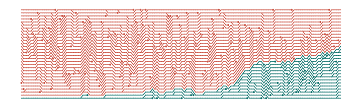
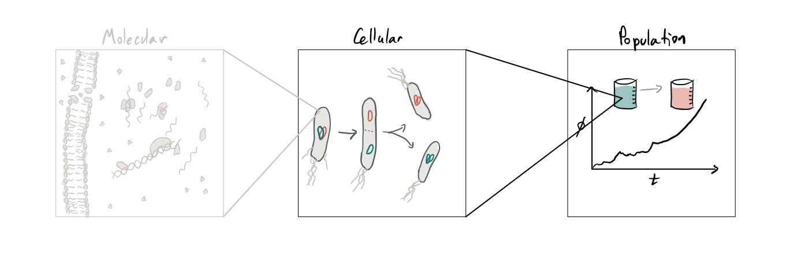
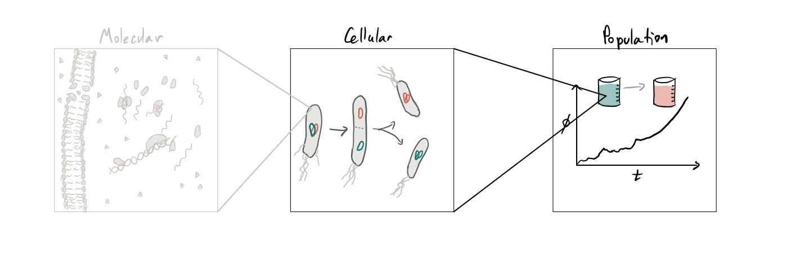
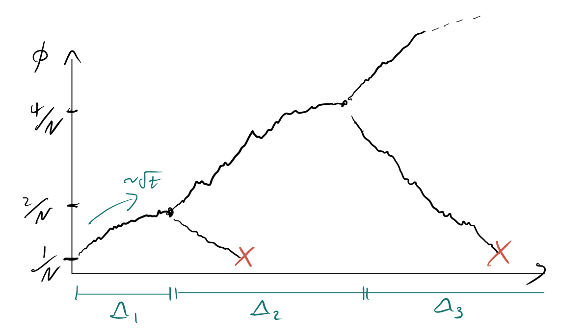
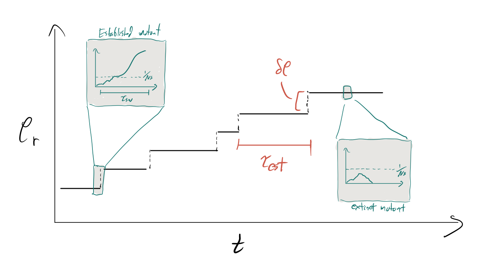
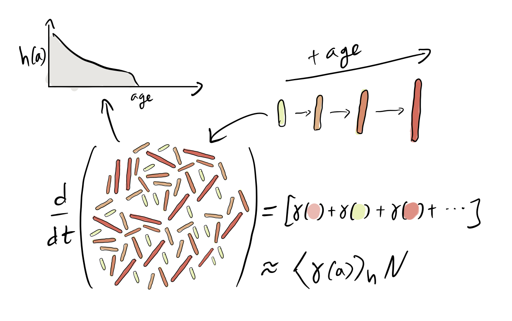
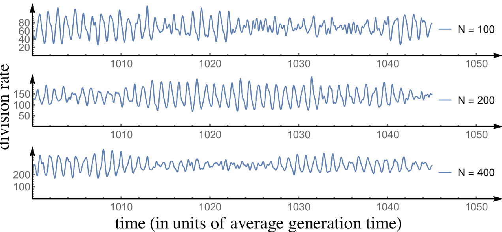

Coarse-graining evolutionary dynamics models
Ethan Levien (Dartmouth College)
Joint work with Farshid Jafarpour (Utrecht University) and Ariel Amir (Harvard University)
Evolution: a problem of scales
 

One of the central challanges to making quantitative predictions about evolutionary dynamics is that in order to understand evolution we need to connect processes on divergent scales: Mutations alter microscopic processes in the cell, but their fate is determined by population level dynamics.
Part 1: The population scale
Let us begin by introducing evolutionary dynamics models without reference to the single-cell scale.
To keep the discussion biologically grounded, we will imagine evolution playing out in a continous culture.
Evolution in the turbidostat
The basic dynamics in a continous culture can be understood from the ODE model for the number of cells of each genotype $n_i$: \[ \frac{dn_i}{dt} = \underbrace{\rho_i(c)n_i}_{\text{growth}} - \underbrace{Dn_i}_{\text{dilution}} \]
The growth rates depend on a limiting nutient: \[ \frac{dc}{dt} = \underbrace{Dc_0}_{\text{media in}}- \underbrace{Dc}_{\text{dilution}} - \underbrace{\gamma^{-1}\left[\sum_i\rho_i(c)n_i\right]c}_{\text{nurtient update}} \]
In the turbidostat the dilution rate $D$ is adjusted to fix the total population size $N = \sum_i n_i$, which means \[ \begin{equation} D = \rho_i(c)n_i \implies c \to \frac{\gamma c_0}{\gamma+1} \end{equation}\]
We obtain the so-called replicator equations for the genotype fractions $\phi_i = n_i/N$: \[ \frac{d\phi_i}{dt} = \phi_i\left(\rho_i - D - \sum_j \phi_j(\rho_j-D)\right) \]
We will focus on the case of two species, a "mutant" with growth rate $\rho_m$ and "resident" with growth rate $\rho_r<\rho_m$: \[ \frac{d\phi}{dt} = (\rho_m - \rho_r)\phi(1-\phi) \]
The Moran model
These equations work well when $\phi$ is not too small, but new mutations emerge in single-cells, so $\phi(0) = 1/N$ $\implies$ Model must include fluctuations!
Question: How do we add noise to the model?
Modeling noise in the (continous time) Moran model
- Sampling: We assume each cell has equal chance of being expelled in a dilution event.
- Cell-to-cell variability: We assume cells divide at a constant rate $\rho_i$; that is, $\rho_idt$ is the chance for a cell of genotype $i$ to divide in the interval $[t,t+dt)$.
The Moran model
This means that over a small time interval $\Delta t$, the number of mutants gained and lost are both given by Poisson distributions: \[\begin{aligned}\text{# of mutants gained} &\sim {\rm Poission}(N\rho_m\phi(1-\phi) \Delta t)\\ \text{# of mutants lost} &\sim {\rm Poission}(N\rho_r\phi(1-\phi) \Delta t) \end{aligned}\]
We can calculate the mean and variance of $\Delta \phi$: \[\begin{aligned}\color{rgb(20, 116, 111)}{\langle \Delta \phi \rangle} &= (\rho_m - \rho_r)\phi(1-\phi)\Delta t\\ \color{rgb(205, 88, 73)}{{\rm var} \left(\Delta \phi \right)} &= \frac{(\rho_m + \rho_r)}{N}\phi(1-\phi)\Delta t \end{aligned}\]
Corresponds to SDE \[ \frac{d}{dt}\phi = \color{rgb(20, 116, 111)}{\underbrace{(\rho_m-\rho_r)\phi(1-\phi)}_{\text{selection}}} + \color{rgb(205, 88, 73)} {\underbrace{\sqrt{(\rho_m + \rho_r)\frac{\phi(1-\phi)}{N}}\xi}_{\text{fluctuations/drift}}} \]
or the Fokker-Plank equation \[ \frac{\partial}{\partial t}p(\phi,t) = \color{rgb(20, 116, 111)}{-\frac{\partial}{\partial \phi}[(\rho_m - \rho_r)\phi(1-\phi)p(\phi,t)]} + \color{rgb(205, 88, 73)} {\frac{1}{2}\frac{\partial^2}{\partial \phi^2}\left[\frac{(\rho_m + \rho_r)\phi(1-\phi)}{N}p(\phi,t) \right]} \]
The Moran model
Some trajectories starting on $\phi(0) = 1/N$

The behavoir depends stronly on whether selection or drifts dominates.
When does the transition occur?
The Moran model
We know it must be when $\phi$ is small, so we can linearize \[ \frac{d\phi}{dt} =\delta \rho\phi(1-\phi) + \sqrt{2\rho_r\frac{\phi(1-\phi)}{N}} \approx \delta \rho \phi + \sqrt{2\rho\phi/N}\xi \]
And calculate moments of linearized equation \[\frac{d}{dt}\left\langle\phi^k \right\rangle = \int \phi^k \frac{\partial}{\partial t}p(\phi,t)d\phi \to \text{integrate by parts}\]
which lead to an equation for the coefficient of variation (CV): \[ CV = \frac{{\rm std}(\phi)}{\langle \phi\rangle} =\frac{2\rho_r(1-e^{-st})}{Ns\phi_0} \to \frac{2}{Ns \phi_0},\quad s = \frac{\delta \rho}{\rho_r} \]
The quantity $\color{rgb(205, 88, 73)}{1/Ns}$ is called the Drift barrier
The Moran model
So what is the chance the mutant lineage reaches the drift barrier before going extinct?
Heuristic argument from Fisher 2007: Below the drift barrier, we can approximate the dynamics over a time $\Delta$ by \[ \Delta \phi = \phi(t+\Delta)-\phi(t) = \sqrt{\frac{2\rho_r \Delta\phi(t)}{N}}Z,\quad Z \sim {\rm Normal}(0,1) \] This will approximation will give us an order-of-magnitude estimate of $\Delta \phi$ before some time $\Delta_1 = O(\phi(t)N/\rho_r)$.
At $\Delta_1$, the mutant fraction will have changed by $\pm \phi(t)$. This means the population has roughly an equal chance of doubling or going extinct over a time period on the order of $\phi(t)N/\rho_r$.
The Moran model
So what is the chance the mutant lineage reaches the drift barrier before going extinct?
The Moran model
So what is the chance the mutant lineage reaches the drift barrier before going extinct?
Repeat the approximation and after $k$ iterations a time $t_k$ has elapsed where \[ t_k = t_{k-1} + \phi(t_{k-1})N/\rho_r = \frac{1}{\rho_r}\sum_j 2^{j} \sim \frac{2^k}{\rho_r} \implies k = \ln(\rho_rt)/\ln(2) \]
Plugging $k = \ln(t\rho_r)/\ln(2)$ we are obtain order-of-magnitude estimates of the mutant size and chance of survival: \[ \phi(t) = \left\{ \begin{array}{cl} t\rho_r/N & \text{with prob. $\frac{1}{t\rho_r}$}\\ 0 & \text{with prob. $1-\frac{1}{t\rho_r}$}\end{array}\right. \]
So the population will reach a fraction $1/Ns$ after a time $t_{\rm drift} = 1/s\rho_r$.
The chance the survive until this time is $p_{\rm fix}\sim 1/t_{\rm drift}\rho_r = s$.
The Moran model
How fast do mutations accumulate?
In general, very complicated problem because we need to consider competition between >2 mutants and the theory above breaks down.
When can we neglect competition between mutant lineages?
Two important time-scales:
- Establishment time $\tau_{\rm est}$: The time for a new mutation to occur and become established (reach the drift barrier) in the population. Mutations happen at a rate $\mu$ per cell-division and a fraction $p_{\rm fix} \sim s$ of them will reach the dirft barrier, so $\tau_{\rm est} = 1/Ns\rho_r\mu$.
- Sweep time $\tau_{\rm sw}$: The time for an established mutation to sweep through the population. Since established mutations grow approximately exponentially starting from the drift barrier, $\tau_{\rm sw}$ is on the order of $1/\delta \rho\ln (Ns)$
The Moran model
How fast do mutations accumulate?
In general, very complicated problem because we need to consider competition between >2 mutants and the theory above breaks down.
When can we neglect competition between mutant lineages?
The Moran model
How fast do mutations accumulate?
In general, very complicated problem because we need to consider competition between >2 mutants and the theory above breaks down.
When can we neglect competition between mutant lineages?
Condition for "succesive mutations": \[\tau_{\rm sw} = 1/\delta \rho\ln (Ns) \ll \tau_{\rm est} = 1/N\mu \rho_r s \implies N\mu \ln Ns \ll 1 \]
In this regime, fixations are Poisson process with rate $1/\tau_{\rm est} = N\rho_r\mu s$.
Simple case where all mutation increase fitness by $\delta \rho$: \[ \frac{d}{dt}\langle\rho \rangle = \frac{\delta \rho}{\tau_{\rm est}} = N\mu (\delta \rho)^2\implies \langle \rho(t) \rangle \sim tN\mu (\delta \rho)^2\]
Part 2: From single-cell to population scale
Underneath the Moran model was a pretty strong assumption about how noise in the growth and division of single-cell propogates to the population level.
We will revist this assumption in the context of the Moran model, but first we need to understand some basic aspects of so-called age-structured populations.
Motivation from single-cell data
Wang et al. Current Biology (2010)

The basic picture of single-cell growth: cells accumulate mass exponentially at a (random) rate $\rho$ between cell divisions, then divide in two after a (random) time $\tau$. Complex regulatory mechansims shape the distribution of genertaions times
Question: How does evolution shape the distribution the distribution of generation times?
From single-cell to population scale
Before we connect single-cell dynamics to evolution, let's first connect to population growth.
Alfred Lotka (1934), Bellman and Harris (1948) and Powell (1956): Each cell's generation time is drawn independently from a distribution $f(\tau)$.
In the long-term, ${\mathbb E}[N(t)] = Ae^{\rho t}$ for some $\rho$.
How does the rate at which the population grows depend on the distribution of generation times?
The Euler-Lotka Equation
The root cell has two daughters with progenies that grow exponentially at the same rate $\rho$.
Let $\tau$ be the first cell's generation time:
Writing the population size at time $t$ in terms of the size of both daughter progenies gives the so-called Euler-Lotka Formula
The Euler-Lotka Equation
Example: assume generation time distribution is a Gamma distribution characterized by a mean, $\bar{\tau}$ and coefficient of variation, ${\rm CV}$: \[ f(\tau) = \frac{1}{\Gamma(k)}\tau^{k-1}e^{-\tau/\theta} \] where $\theta = \langle\tau \rangle {\rm CV}^2$ and $k = 1/{\rm CV}^2$.
Plugging into the Euler-Lotka Formula reveals \[\rho = \frac{2^{-{\rm CV}^2}-1}{{\rm CV}^2\tau}\]
Note that $\rho$ increases with ${\rm CV}^2$. Two important cases:
- $CV \to 0$, $\rho \to \ln(2)/\langle\tau \rangle$
- $CV =1$, $\rho = 1/\langle \tau \rangle$
Generalized Euler-Lotka Formula
The Euler-Lotka formula has an elagent generalization to the case where cell's generation times are correlated with their ancestors (Lebowitz et al., 1974): where $\color{rgb(20, 116, 111)}{f_{\rm tree}(\tau)}$ is the distribution of generation times taken over all cells throughout the history of an exponentially growing population.
In general $\color{rgb(20, 116, 111)}{f_{\rm tree}(\tau)} \ne \color{rgb(205, 88, 73)}{f(\tau)}$
Interesting question: Can you infer $\Lambda$ from mother-machine lineage data? See Levien, GrandPre, Amir PRL 2020.
Exponential growth rate and age distribution
Another way to think about the exponetial growth rate: it is the average division rate over all cells in the population.
If $f_i(\tau)$ is the distribution of single-cell generation times conditioned on the growth rate and cell-size, the per unit time probability for the cell to divide is \[ \gamma_i(a) = \frac{f_i(a)}{1- \int_0^a\,da'\, f_i(a')} \] Note special case: $f_i = \rho_ie^{\rho_i\tau}\implies \gamma_i = \rho_i$.
Then we have (in a large population) \[\frac{d}{dt}N = \rho N = \langle \gamma_i(a) \rangle_h N\] where the average is taken over the distribution of ages $h(a)$ in the population.
Exponential growth rate and age distribution
What about a finite population?
Finite populations
Sampling preserves age distribution, in the limit $N\to \infty$ the age distribution will have converged and we get \[\frac{d}{dt}\phi = (\rho_m-\rho_r)\phi(1-\phi)\quad\quad{\rm with}\quad\quad \frac{1}{2} = \int_0^{\infty}f_i(\tau)d\tau, \quad i \in \{m,r\}\] Connecting growth rates to single-cell statistics is actually more subtle; see Levien, Kondev, Amir 2019
Same question as before: how do we add noise to this?
We want to understand how the stochastic dynamics of birth and death at the single-cell level propogate to population level, but in this case cells do not divide at a constant rate. We need to know the age of every cell in the population to obtain the division rate! We can try writing down a "master equation" which completely specifies the distribution of ages and genotypes.
We then get a hyperbolic PDE for $Q$:\[ \frac{d}{dt} Q({\bf u},{\bf a},t) + \sum_{k=1}^N \frac{\partial}{\partial a_k} Q({\bf u},{\bf a},t) = - Q({\bf u},{\bf a},t)\left(D+ \sum_{k=1}^N \gamma_{u_k}(a_k)\right) \] along with the boundary conditions \[ Q(S_{k,u_v}({\bf u}),S_{k,0}(S_{v,0}({\bf a})),t)= \frac{1}{N} \gamma_{u_v}(a_v)Q({\bf u},{\bf a},t)\]
Bridging-scales
We don't really care about $Q$ though! we are interested in the behavoir of the mutant fraction $\phi$.
Question: can we coarse-grain to get an effective SDE?
Just like before, we can try deriving an SDE: \[\begin{aligned}\text{# of mutants gained} &\sim {\rm Poission}\left(N\langle\gamma_m(a_i) \rangle_h\phi(1-\phi) \Delta t\right)\\ \text{# of mutants lost} &\sim {\rm Poission}\left(N\langle\gamma_r(a_j) \rangle_h\phi(1-\phi) \Delta t\right) \end{aligned}\]
We might guess that we can make the approximation $\langle\gamma_i(a_j,\rho_j,s_j) \rangle_h \approx \rho_i$. This obviously isn't going to work when $N\phi$ is very small, but perhaps if the drift barrier $1/s$ is not too small we can capture the dynamics with the SDE: \[ \frac{d}{dt}\phi = (\rho_m-\rho_r)\phi(1-\phi) + \sqrt{(\rho_r + \rho_m)\frac{\phi(1-\phi)}{N}}\xi \] All the classical results about fixation and neutral drift then follow.
Much of the previous liturature on evolution in age-structured populations focuses on this approximation (e.g. Shpak (2007))
Results: Neutral dynamics
Let's start by considering the neutral case ($\rho_m = \rho_r=0$). In the classical Moran model, we expect that \[ \frac{d}{dt}\phi = \sqrt{\frac{2\rho}{N}\phi(1-\phi)} \implies {\rm var}(\phi) \approx \frac{2\rho}{N}\phi_0(1-\phi_0)t \]

Ratio is $O(1)$ $\implies$ effects of age-structure do not vanish in large populations. What's going on?
Basic idea: age distribution gets smoothed out as $N$ grows, but overall strength of genetic drift decreases, so large $N$ means small effects matter.
In limit ${\rm CV} \to0$ we get an extra factor of $3/8N\ln(2)$.
Results: Neutral dynamics
Let's start by considering the neutral case ($\rho_m = \rho_r=0$). In the classical Moran model, we expect that \[ \frac{d}{dt}\phi = \sqrt{\frac{2\rho}{N}\phi(1-\phi)} \implies {\rm var}(\phi) \approx \frac{2\rho}{N}\phi_0(1-\phi_0)t \]
Fluctuations in division rate exhibit stochastic osillations (they are non-Markovian)
Results: beneficial mutations
Now let's consider the fate of a benificial mutation occuring in one cell. Can we use the argument from before but with the drift barrier at $N_{\rm eff} = 2\rho/3\ln(2)N$?
Let $p_{\rm ext}$ be the probability that a mutant goes extinct. Then \[ p_{\rm ext} = q +(1-q)p_{\rm ext} ^2. \] where \[q = {\mathbb P}[\text{cell is expelled before division}] = \rho_r\int_0^{\infty}\int_0^{\tau_d}f_m(\tau_d)e^{-\rho_r \tau_e}d\tau_e d\tau_d = 1 - \tilde{f}_m(\rho_r)\] and $\tilde{f}_m(\rho_r) = \int_0^{\infty}f_m(\tau)e^{-\rho_r\tau}d\tau$ is the Laplace transform of $f_m$ evaluated at $\rho_r$.
If $q>1/2$, we get \[p_{\rm fix} = 1- p_{\rm ext} =1- \frac{q}{1-q} \] which implies \[\frac{1}{2-p_{\rm fix}} = \tilde{f}_m(\rho_r)\]

Results: beneficial mutations
Example: Let's assume the distribution of generation times is a gamma distribution.
We can show that \[ p_{\rm fix} = \frac{2}{{\rm CV}_{\tau}^2}\left(1-2^{-{\rm CV}_{\tau}^2} \right)s + O(s^2).\]
Notice that as ${\rm CV}\to 0$, we obtain $p_{\rm fix} = 2\ln(2)s \ne N/N_{\rm eff}s$.

We cannot capature the dynamics by rescaling Moran SDE -- connection between genetic drift and fixation breaks down.
Results: long-term evolution
Do small effects on fixation probability matter in the long-term?
Recall that the time between mutations, and therefore the rate of evolution depends on the establishment time $\tau_{\rm est} = 1/(N\rho_r\mu p_{\rm fix})$
Imagine mutations increases growth rate via generation time ${\rm CV}$ but mutations have a fixed selective advantage $s$. In classical Moran model, fitness increases linearly.

Future directions
Correlated generation times: When generation times are correlated (the more biologically realistic scenerio) we get an integral equation for the extinction probability conditioned on the ancestral cells generation time: \[p_{\rm ext}(\tau) = q(\tau) + (1-q(\tau))\left[\int_0^{\infty}p_{\rm ext}(\tau')f(\tau'|\tau)d\tau'\right]^2 \] Haven't made much progress on this!
Evolution in serial dilution experiments: In serial diluation experiments the situation is quite different because sampling occurs after a long period of growth. In this case a major source of fluctuations is the lag time-distribution, but many of the conceptual points we've made still apply (e.g. effects on long-term evolution).
Predictions of genetic drift in continuous culture experiments: There has been some work measuring effective population size in continuous culture, but I think it would be cool to predict this based on knowledge of experimental parameters and single-cell traits. Can we predict how effective population size will respond to tuning e.g. dilution rate? That would be cool!
Thanks for listening
Questions?
Contact me for opportunities in my group!